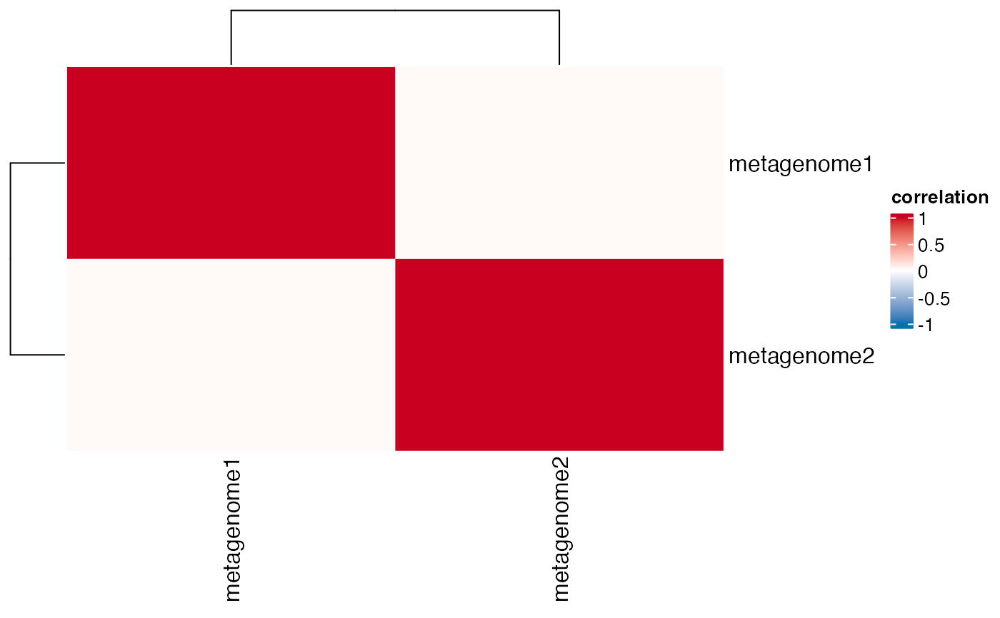

Compare Metagenome Results
A list of metagenomes matrices with rows as KOs and columns as samples. Each matrix in the list should correspond to a different metagenome.
A vector of names for the metagenomes in the same order as in the `metagenomes` list.
A character specifying the method for differential abundance analysis (DAA). Possible choices are: "ALDEx2", "DESeq2", "edgeR", "limma voom", "metagenomeSeq", "LinDA", "Maaslin2", and "Lefse". The default is "ALDEx2".
A character specifying the method for p-value adjustment. Possible choices are: "BH" (Benjamini-Hochberg), "holm", "bonferroni", "hochberg", "fdr", and "none". The default is "BH".
A character specifying the reference group level for DAA. This parameter is used when there are more than two groups. The default is NULL.
A list containing two elements:
"daa": a list of results from the `pathway_daa` function. Each result is a data frame containing the differential abundance analysis results with columns for the feature ID, the test statistic, the raw p-value, and the adjusted p-value.
"correlation": a list with two elements: "cor_matrix" and "p_matrix", which are matrices of Spearman correlation coefficients and their corresponding p-values, respectively, between every pair of metagenomes.
# \donttest{
library(dplyr)
#>
#> Attaching package: ‘dplyr’
#> The following objects are masked from ‘package:stats’:
#>
#> filter, lag
#> The following objects are masked from ‘package:base’:
#>
#> intersect, setdiff, setequal, union
library(ComplexHeatmap)
#> Loading required package: grid
#> ========================================
#> ComplexHeatmap version 2.16.0
#> Bioconductor page: http://bioconductor.org/packages/ComplexHeatmap/
#> Github page: https://github.com/jokergoo/ComplexHeatmap
#> Documentation: http://jokergoo.github.io/ComplexHeatmap-reference
#>
#> If you use it in published research, please cite either one:
#> - Gu, Z. Complex Heatmap Visualization. iMeta 2022.
#> - Gu, Z. Complex heatmaps reveal patterns and correlations in multidimensional
#> genomic data. Bioinformatics 2016.
#>
#>
#> The new InteractiveComplexHeatmap package can directly export static
#> complex heatmaps into an interactive Shiny app with zero effort. Have a try!
#>
#> This message can be suppressed by:
#> suppressPackageStartupMessages(library(ComplexHeatmap))
#> ========================================
# Generate example data
set.seed(123)
# First metagenome
metagenome1 <- abs(matrix(rnorm(1000), nrow = 100, ncol = 10))
rownames(metagenome1) <- paste0("KO", 1:100)
colnames(metagenome1) <- paste0("sample", 1:10)
# Second metagenome
metagenome2 <- abs(matrix(rnorm(1000), nrow = 100, ncol = 10))
rownames(metagenome2) <- paste0("KO", 1:100)
colnames(metagenome2) <- paste0("sample", 1:10)
# Put the metagenomes into a list
metagenomes <- list(metagenome1, metagenome2)
# Define names
names <- c("metagenome1", "metagenome2")
# Call the function
results <- compare_metagenome_results(metagenomes, names)
#> Converting metadata to tibble...
#> Sample names extracted.
#> Identifying matching columns in metadata...
#> Matching columns identified: sample . This is important for ensuring data consistency.
#> Using all columns in abundance.
#> Converting abundance to a matrix...
#> Reordering metadata...
#> Converting metadata to a matrix and data frame...
#> Extracting group information...
#> Running ALDEx2 with two groups. Performing t-test...
#> operating in serial mode
#> computing center with all features
#> ALDEx2 analysis with two groups complete.

# Print the correlation matrix
print(results$correlation$cor_matrix)
#> metagenome1 metagenome2
#> metagenome1 1.00000000 0.02663529
#> metagenome2 0.02663529 1.00000000
# Print the p-value matrix
print(results$correlation$p_matrix)
#> metagenome1 metagenome2
#> metagenome1 0.0000000 0.4000717
#> metagenome2 0.4000717 0.0000000
# }